|
Report Number Six - Closed Gates and a New Bypass By: Jeff Head, August 24, 2001 [with many photos and narrative by Sean Finnegan] I was informed early on Thursday morning, August 23rd, that the Federal personnel had closed the headgates in Klamath around 6:30 my time. This was expected as they had announced that they would do this very thing sometime between Thursday and Friday. I had returned to Emmett, Idaho after the Freedom Day activities and had just arrived at my place of employment in Boise that morning. I immediately exited the building and began using my cell phone to contact people. I talked to several farmers and organizers regarding the situatioon. I talked to Sean Finnegan (aka "nunya bidness" on FreeRepublic). It was clear that the farmers in Klamath intended to have their rights and would not sit back and allow the water to be turned off without a response. Some were for "going in" and taking the headgates, others were for continuing a new petiton effort for the land owners with water rights to get the Sheriff to take more direct action against the Federal personnel at the headgates. This effort is a great effort, getting those landowners with water rights in Klamath County to sign a petition and later a complaint regarding the infringement of their rights. Apparently Sheriff Evinger had indicated he would take some action if 770 signatures could be gathered. They already had over 600 that morning (this number would grow to over 1300, virtually all of the citizens with water rights in the basin in Klamath county). Other farmers and organizers and supporters wanted to get a larger bypass going around the headgates, similar to what we had done five weeks earlier. I believed the petition idea was great, but also believed that some direct action was necessary. I advised them to see if they could get buy-in with the people that wanted to "go in" and then use their activities and "threats" to go in as a ruse, or diversion to hold the press in place while material was gathered for a bypass. We had used similar tactics to good effect five weeks earlier when we created the first bypass. I also advised them, from my perspective that the bypass put exactly the right kind of direct pressure on the government which was needed for ultimate success, and that they should get the material together and make that happen. My major point of contact was Sean Finnegan, who had driven out to Klamath from Maryland for the Freedom Day rally and who was stepping up to the plate to be a true friend of the farmers and a source of ongoing infrmation for folks tracking things on the web. Thank God he came there and that the Spirit moved him to stay and help. That every American could sense the urgency of this cause in the same way and respond accordingly. Information filtered in throughout the day, both by phone and by email. The gates were completely closed by 8 AM my time (7 AM in Klamath) and folks were gathering at the headgates ... the press contingent was very strong as they felt ... perhaps hoped? ... that a significant and direct confrontation would take place.
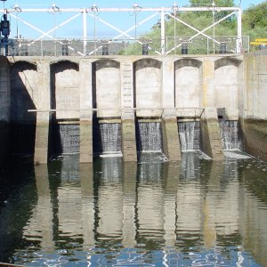 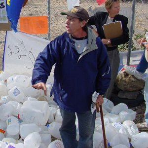
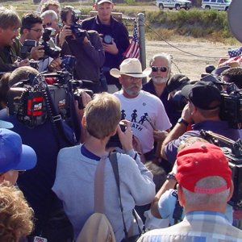 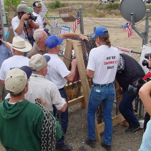
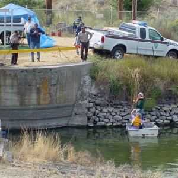 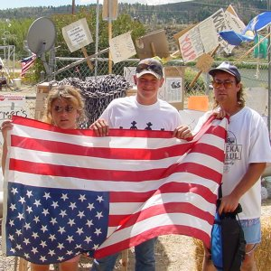
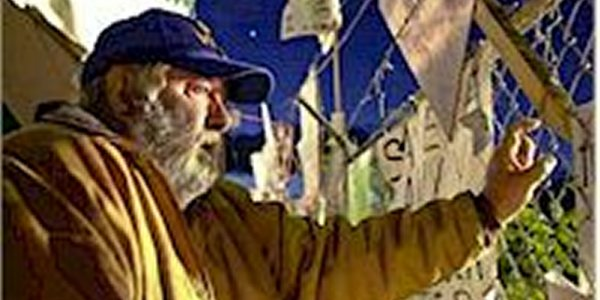
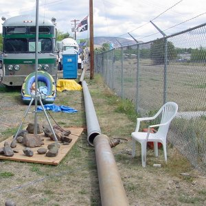 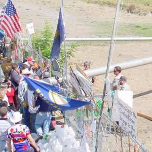
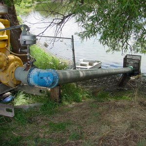 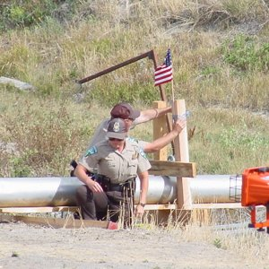 Finally, the equipment was all in place. We heard over email, the internet and the phone that the "turn on" was imminent. Then, after 6 PM, some 12 hours after the Federal government had turned off the headgate water, the pump was turned on and water began to flow into Canal A again! I am not ashamed to say that I shed tears when I heard this. The spirit of liberty reached across the interveneing miles and touched my heart ... the emotions from a few weeks ago were rekindled. LET THE WATER FLOW! The crowd was reported to be cheering wildly ... the ferderal personnel were smiling ... the water was flowing again!
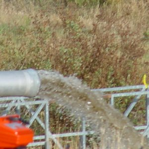 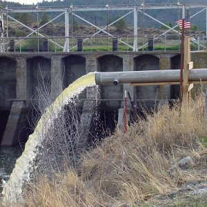
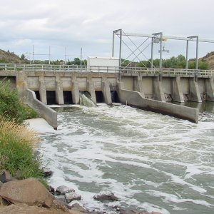 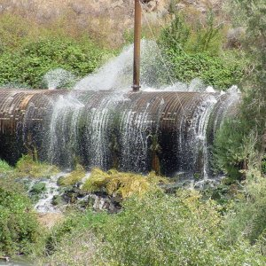 I proceeded to make my way to the Link River Dam. This leads to the the Pacificorp turbines that generate power for Pacific Power and Light. The flow from the dam was impressive.So, another day passed in this epic stand between patriotic, hard working and law abiding farmers and a federal government caught up in the regulatory madness and tyranny that is trampling on the rights of these citizens, and is destroying their livelihood and way of life. I am SO PROUD of these people and their direct, principled and yet civil stand against an encroaching tyranny. I am humbled to know them, to be involved with them and to witness their steadfrastness and courage. God bless them, God bless all who struggle for liberty and are willing to stare straight into the eye of the tyrant and not waiver. We cannot let this stand. What is done to them, can be done to us all. We sit back, we ignore and we avoid involvement at all of our peril. To my friends and compatriots in Klamath I say ... LET MORE WATER FLOW! Put in another pipe every day or two ... put in bigger pipes! Get those 36" siphons going and make plain the intent to have your rights. The politicians, the policy makers, the administrators and the people used to enforce this MUST know of the resolve of committed, God-fearing and patriotic Americans to not back down and to claim their rights.
Jeff Head
SIGN THE NATIONAL PETITION FOR THE KLAMATH BASIN CRISIS
CLICK BELOW FOR BOOKS/NOVELS OF INTEREST: 


[Please consider visiting these sites as well] The Attack on America Memorial Site - The Winning Iraqi Freedom Dedicatory Site
Copyright © 2001-2006 by Jeff Head, All Rights Reserved
|